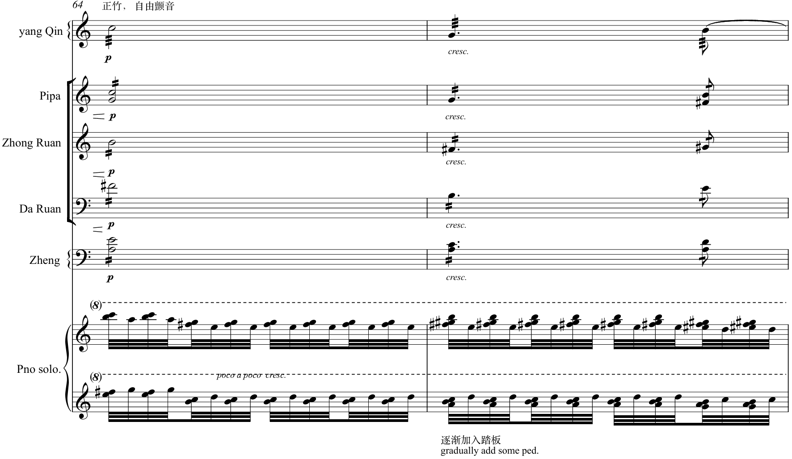
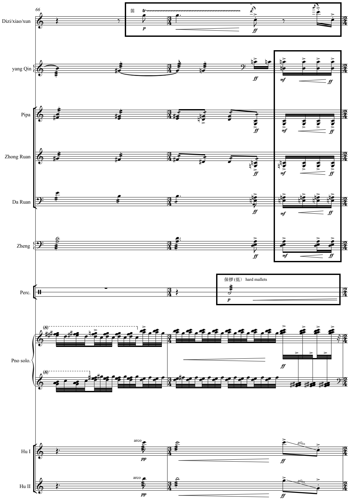
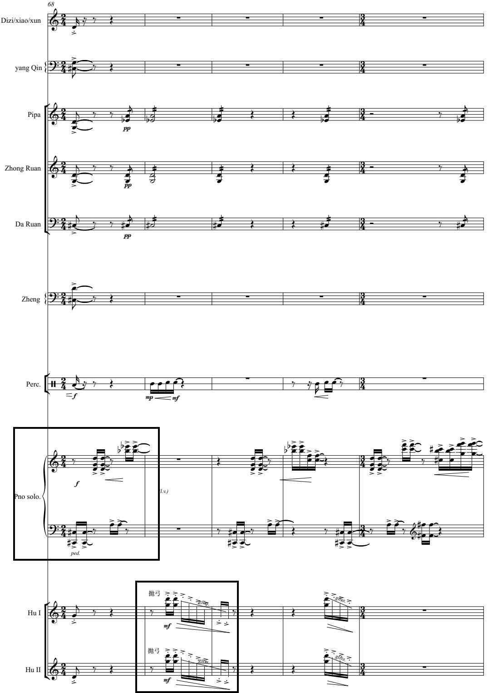

Musical Excerpt 6 in 5.3.3 Textural change and shifting tension (Figure 5.7b) Gao Ping, Si Bu Xiang — movement II, bars 64–72 (6:44–6:59) Your browser does not support HTML5 audio. Page 1 of 3    Select the score image to view it at full resolution.